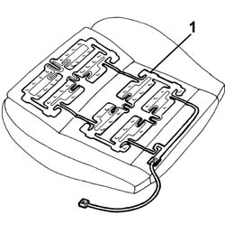

5580C28 sensor for activating airbag beneath passenger seat - r r
- Path
- Procedures > 55 ELECTRICAL EQUIPMENT > 5580 SPECIAL ACCESSORIES > 5580C air bag system > 5580C28 sensor for activating airbag beneath passenger seat - r r
- Kind
- repair procedure (removal / refitting; the operation number is the code)
- Applies to
- all engines; all production periods
- Interactive page
- https://sloeber94.github.io/elrnDB-a156/en/#/3238530
Applies to: all engines; all production periods
Applies to: all engines; all production periods
 Removing
Removing
 Refitting
RefittingDisconnect the electrical connection on the rear of the seat.
 | Name | Connector |
|---|---|---|
- | Sensor in seat for disabling passenger Air Bag |
7045A10 l/h or r/h front seat (one) - r+r (passenger side)
- 7045A16 HOOK securing folding cushion of a front seat (one), left or right - R.R . (passenger side)
1. Remove the sensor, lifting it from the seat padding.

Applies to: all engines; all production periods
Refitting
RemovingCheck that the sensor is not damaged.
Position the sensor carefully on the padding.
- 7045A16 HOOK securing folding cushion of a front seat (one), left or right - R.R . (passenger side)
7045A10 l/h or r/h front seat (one) - r+r (passenger side)
Connect the sensor electrical connection.
Check system operation using the Examiner or another tester.